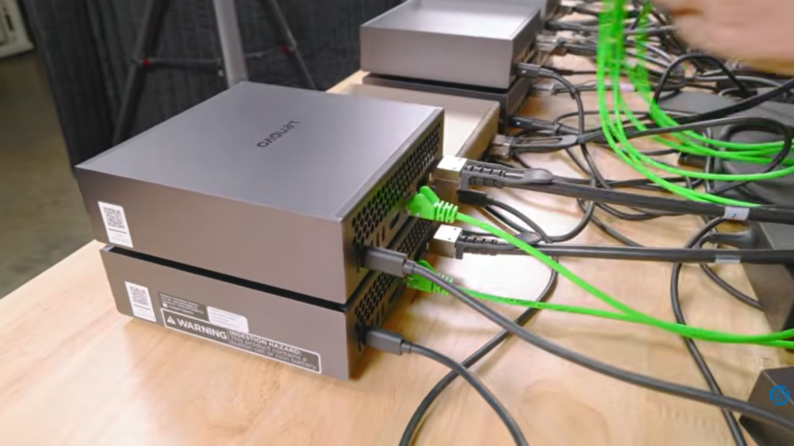
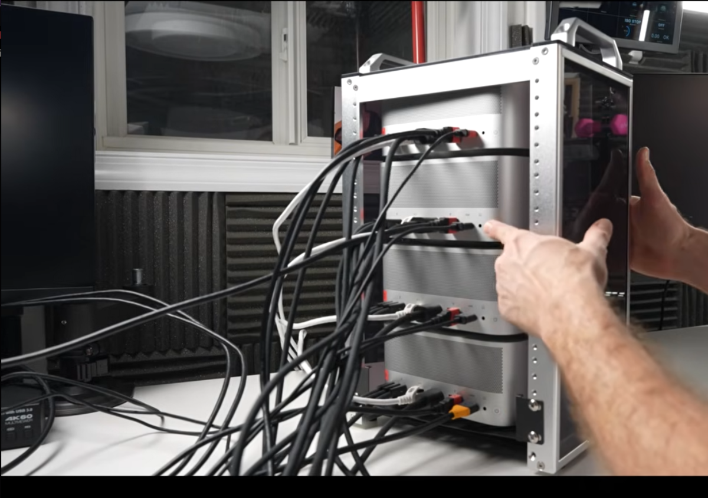
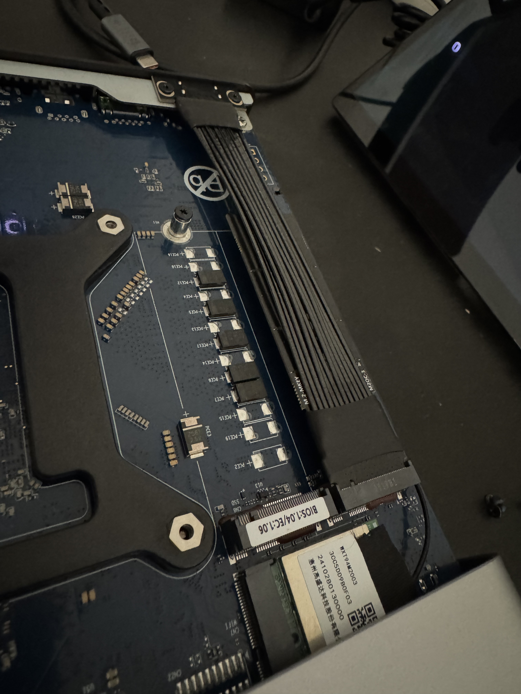
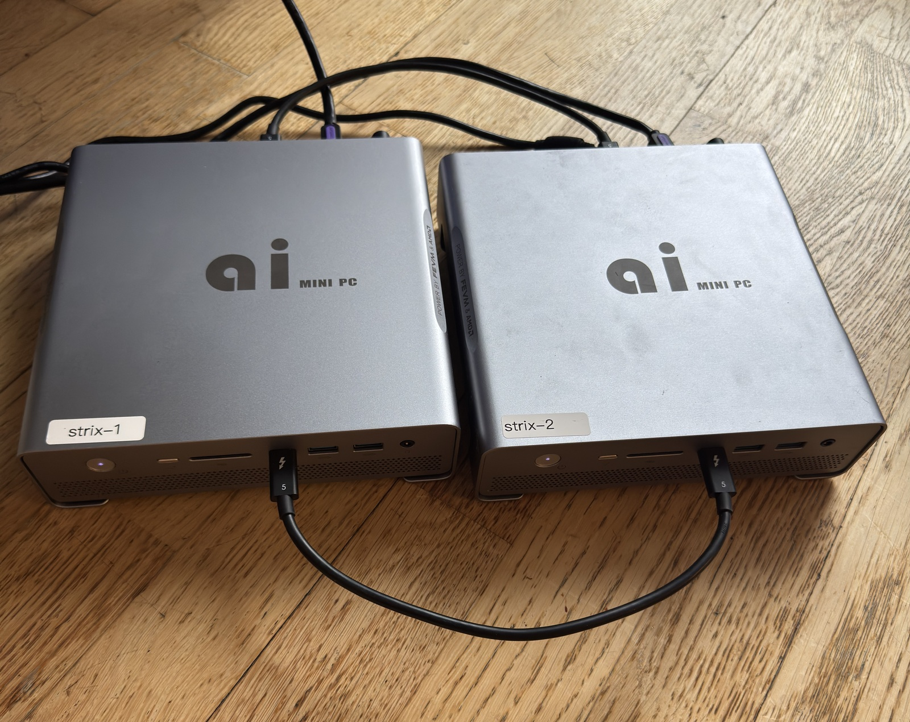

II. Scaling
Models larger than 128GB are getting into the 'almost useful' category- if we found a way to combine multiple of these devices together like we did our 3090s, we could run large commercial-grade models- in the range of 100b-500b parameters like DeepSeek, GLM, MiniMax, Qwen, etc, which are too big to fit on a single device. I can just add up the total bandwidth of all my memory channels to see how fast I'll be able to generate tokens?
Well.. no. Broadly speaking, LLM inference is a sequential process- we must know the token output of the previous step in order to start generating the next one. There are various different approaches to splitting inference across multiple devices, but the one that's most interesting to our 'split a large model across several devices' use case is tensor parallelism: a single model layer's computation is split across devices, so each device computes a shard of the same operation and the partial results are combined before the model can continue. Since each device is working in parallel, we might hope two machines go twice as fast, four machines go four times as fast, and so on?
Well.. no. Exchanging these partial results across the network quickly becomes the bottleneck. To see why, we need to decompose our initial statement, asking for "fast memory"- "fast" can mean two things:
- Low latency — how long do i have to wait to fetch a single item? Unit: time, usually seconds or microseconds.
- High Bandwidth — how many items per second can I fetch in total? Unit: items per second, usually bytes/s or tokens/s.
This is different from pipeline parallelism, where different layers live on different devices and activations move from stage to stage. For tensor parallelism, we need both bandwidth and latency: if a core is spending too much time waiting for data, we won't get good performance; if a core is stuck because it can't send data fast enough, or receive confirmation that it was received, we won't get good performance. So let's go back and look at our options for networking:
| Platform | Network | Bandwidth | Latency |
|---|---|---|---|
| DGX Spark | ConnectX-7 NIC | 2 × 200 Gb/s | ~1 µs |
| MacBook / Studio / Mini | Thunderbolt 4/5 | 4 × 80 Gb/s | "memory access latency from ~300 µs over TCP to <50 µs" (per Apple's TN3205) |
| Strix Halo | 2.5 GbE | 2.5 Gb/s | ~1 ms |
(Some Strix Halo boards do ship a 10 GbE port instead, but I believe it costs you PCIe lanes elsewhere on the board.)
Uh-oh- our champion seems to be falling pretty short on the networking front! Let's check out the competition:
Networking: NVidia GB-10
The DGX Spark (NVidia's GB-10 reference design) contains a high-end ConnectX-7 NIC with 2x 200 Gb/s (*) QSFP cages. This is the "Gold Standard" of low-latency, high-bandwidth networking- the same hardware used in million-dollar data center deployments. Outside of the GB10 system, this nic costs ~$1000- a lot of budget to spend if you don't need it, and if you do, better plan on buying some expensive enterprise-grade network switches to connect it. Since it uses the same software stack as in their data center deployments, there's an existing ecosystem of tools and libraries.

Still from ServeTheHome's I built an 8x NVIDIA GB10 cluster for massive Local AI.For scale: ServeTheHome's full 8-node GB10 cluster — pictured above — lands around ~$45,000, of which ~$32k is the eight Sparks themselves ($3,999 × 8). The networking is surprisingly cheap thanks to MikroTik's $1,295 4-port 400 GbE switch (CRS804 DDQ, broken out to 16× 200 G); a Cisco 10 GbE management switch and a QNAP U.2 NVMe NAS round out most of the rest. A more modest 2-node build still runs ~$10k. (Full BOM in the STH article.)
Demand for low-latency/high-bandwidth networking has broadly converged around the set of verbs defined by the InfiniBand protocol, and a mechanism called 'kernel bypass' that allows applications to bypass the kernel and directly access the hardware in question, without having to call into kernel code.
Although the NIC itself is capable of these speeds, it's connected to the SoC via PCIe 5.0 x8, capping it at 256Gbps across both channels, less in practice
Networking: Apple
Apple's consumer-focused hardware takes a different approach and instead rely on Thunderbolt for high-speed networking. Thunderbolt 5 standard allows up to 80Gbps full duplex per cable, and higher-end Mac devices have up to 6 Thunderbolt 5 ports, in theory allowing for up to 480Gbps aggregate bandwidth. MacOS has supported IP-over-Thunderbolt for some time, and TN3205 was shipped with macOS 26.2 support for RDMA over Thunderbolt via their own JACCL library, with the explicit goal of allowing users to run distributed inference via their MLX library.

Still from Alex Ziskind's Mac Studio CLUSTER vs M3 Ultra (Apr 2025).The pictured cluster is 4× Mac Studio M3 Ultra with 512 GB unified memory each — about $9,500/unit × 4 = ~$38,000, plus a handful of Thunderbolt 5 cables (~$100 each) and a hand-built aluminium rack. Total ≈ $40k for 2 TB of unified memory across the cluster — comparable money to the 8× DGX Spark build above, with 2× the aggregate memory but capped to macOS-only software (MLX, JACCL, etc.). A more modest 2-node M4 Max cluster (128 GB each, no Thunderbolt switch) is ~$8k.
Networking: Strix Halo
AMD's Strix Halo platform generally feature a single 2.5GbE Ethernet port, a couple of 40G USB4 ports and a handful of USB3 ports.
OcuLink
The "FEVM FAE9" boxes I bought also have an "OcuLink port", which is none other than a short cable which connects the 42-pin OcuLink socket on the rear of the case to one of the internal M.2 slots.

You can use this to connect faster network card- e.g 100GbE ConnectX-4 NICs- though you'll need adaptors and extenders so it fails the grandma test.
USB4
So we're left with the USB4 ports. USB4 is the open standard Thunderbolt 4 is built on- same 40Gbps per cable, tunneling, etc- we should be able to use these like Apple does? I bought two of these machines was with this in mind- naively assuming 2x 40Gbps per cable = 80Gbps aggregate bandwidth, PCIe-level latency. The reality was.. disappointing.
Out-of-the-box with linux
The first thing I did after installing nixos-infect'ing both machines was to connect the USB4 ports together:

thunderbolt
The Linux kernel module thunderbolt loads automatically, and brings up the links:
$ sudo dmesg -w | grep thunderbolt
[39137.389121] thunderbolt 1-0:2.1: new retimer found, vendor=0x1da0 device=0x8830
[39137.900851] thunderbolt 1-0:2.2: new retimer found, vendor=0x1da0 device=0x8830
[39143.759914] thunderbolt 1-2: new host found, vendor=0x1d6b device=0x4
[39143.759925] thunderbolt 1-2: Linux strix-2As with all Linux drivers, it exposes functionality, configuration, and telemetry via sysfs entries:
❯ for d in /sys/bus/thunderbolt/devices/?-?; do [ -f $d/tx_speed ] || continue;
echo "$(basename $d) $(<$d/device_name) tx=$(<$d/tx_speed)x$(<$d/tx_lanes) rx=$(<$d/rx_speed)x$(<$d/rx_lanes)";
done
0-2 strix-2 tx=20.0 Gb/sx2 rx=20.0 Gb/sx2
1-2 strix-2 tx=20.0 Gb/sx2 rx=10.0 Gb/sx2Hm- it sees both cables, but one of them has only trained at 10.0 Gb/s. This happens constantly and I should have put a 'check links are trained at 40g' gate in my testing much earlier than I did- but for reasons we'll discover later- doesn't actually matter that much. For now, lets just unplug and re-plug the cable- what also took me much longer to realise than it should- both ends of the cable need to be re-plugged to trigger re-training- leaving one end plugged in will result in the link coming up at 10.0 Gb/s. After replugging both ends, we're up and running with two cables, each with two tx/rx lanes at 20 Gb/s each.
thunderbolt-net
Now we can load the thunderbolt-net kernel module- another linux kernel module which provides thunderbolt0- standard network interface tunnelling traffic over the wire- as would a regular Ethernet or WiFi interface (eth0, wlan0, etc.)
$ sudo modprobe thunderbolt-net
$ sudo ip link set thunderbolt0 mtu 65520 up && sudo ip addr replace 10.0.5.2/24 dev thunderbolt0
❯ sudo dmesg | grep thunderbolt0
[ 317.019918] thunderbolt-net 1-2.0 thunderbolt0: entered promiscuous modeGreat- we have a new network interface, thunderbolt0! Let's inspect it using ethtool:
❯ sudo ethtool thunderbolt0
Settings for thunderbolt0:
Supported ports: [ ]
Supported link modes: Not reported
Supported pause frame use: No
Supports auto-negotiation: No
Supported FEC modes: Not reported
Advertised link modes: Not reported
Advertised pause frame use: No
Advertised auto-negotiation: No
Advertised FEC modes: Not reported
Speed: 40000Mb/s
Duplex: Full
Auto-negotiation: off
Port: Other
PHYAD: 0
Transceiver: internalSo far, so good- 40Gb/s full duplex- although notice two things:
-
No FEC modes
Forward Error Correction is where the data transmitted across a physical link with 'spare' information, such that the receiver is able to correct any errors which may have occured during transmission without requiring a re-transmit.
-
Pause frames are not supported
Pause frames are a mechanism to signal backpressure- if a sender is overwhelming a receiver, they can ask the sender to slow down.
Let's fire up iperf3 and see how it performs:
❯ iperf -c 10.0.5.2 -t 3
Connecting to host 10.0.5.2, port 5201
[ 5] local 10.0.5.1 port 50810 connected to 10.0.5.2 port 5201
[ ID] Interval Transfer Bitrate Retr Cwnd
[ 5] 0.00-1.00 sec 1.06 GBytes 9.12 Gbits/sec 0 1.06 MBytes
[ 5] 1.00-2.00 sec 1.10 GBytes 9.43 Gbits/sec 0 2.75 MBytes
[ 5] 2.00-3.00 sec 1.10 GBytes 9.46 Gbits/sec 0 2.87 MBytes
- - - - - - - - - - - - - - - - - - - - - - - - -
[ ID] Interval Transfer Bitrate Retr
[ 5] 0.00-3.00 sec 3.26 GBytes 9.34 Gbits/sec 0 sender
[ 5] 0.00-3.00 sec 3.26 GBytes 9.33 Gbits/sec receiver
iperf Done.Well- it works! And certainly faster than Ethernet! But why only 9.45 Gbits/sec? After using computers for some time, you start to see "suspicous numbers". "9.45 Gbits/sec" is a suspicious number- after accounting for protocol overhead, this is likely the usable throughput on a 10 G link. Remembering that our cable carries two lanes of data, perhaps we need multiple streams to use the full bandwidth? Let's try again with 8 parallel streams:
❯ iperf -c 10.0.5.2 -t 3 -P 4
Connecting to host 10.0.5.2, port 5201
...
[ ID] Interval Transfer Bitrate Retr
[ 5] 0.00-3.00 sec 850 MBytes 2.37 Gbits/sec 0 sender
[ 5] 0.00-3.00 sec 847 MBytes 2.37 Gbits/sec receiver
[ 7] 0.00-3.00 sec 851 MBytes 2.38 Gbits/sec 0 sender
[ 7] 0.00-3.00 sec 848 MBytes 2.37 Gbits/sec receiver
[ 9] 0.00-3.00 sec 851 MBytes 2.38 Gbits/sec 0 sender
[ 9] 0.00-3.00 sec 848 MBytes 2.37 Gbits/sec receiver
[ 11] 0.00-3.00 sec 850 MBytes 2.37 Gbits/sec 0 sender
[ 11] 0.00-3.00 sec 847 MBytes 2.37 Gbits/sec receiver
[SUM] 0.00-3.00 sec 3.32 GBytes 9.51 Gbits/sec 0 sender
[SUM] 0.00-3.00 sec 3.31 GBytes 9.47 Gbits/sec receiver
iperf Done.Nope- still blocked. What about in multiple directions? Let's add the --bidir flag:
❯ iperf -c 10.0.5.2 -t 3 --bidir
Connecting to host 10.0.5.2, port 5201
[ 5] local 10.0.5.1 port 43080 connected to 10.0.5.2 port 5201
[ 7] local 10.0.5.1 port 43084 connected to 10.0.5.2 port 5201
[ ID][Role] Interval Transfer Bitrate Retr Cwnd
[ 5][TX-C] 0.00-1.00 sec 528 MBytes 4.42 Gbits/sec 25 4.31 MBytes
[ 7][RX-C] 0.00-1.00 sec 317 MBytes 2.65 Gbits/sec
[ 5][TX-C] 1.00-2.00 sec 483 MBytes 4.05 Gbits/sec 27 4.31 MBytes
[ 7][RX-C] 1.00-2.00 sec 267 MBytes 2.24 Gbits/sec
[ 5][TX-C] 2.00-3.00 sec 481 MBytes 4.03 Gbits/sec 28 4.31 MBytes
[ 7][RX-C] 2.00-3.00 sec 273 MBytes 2.29 Gbits/sec
- - - - - - - - - - - - - - - - - - - - - - - - -
[ ID][Role] Interval Transfer Bitrate Retr
[ 5][TX-C] 0.00-3.00 sec 1.46 GBytes 4.17 Gbits/sec 80 sender
[ 5][TX-C] 0.00-3.00 sec 1.46 GBytes 4.17 Gbits/sec receiver
[ 7][RX-C] 0.00-3.00 sec 860 MBytes 2.40 Gbits/sec 0 sender
[ 7][RX-C] 0.00-3.00 sec 856 MBytes 2.39 Gbits/sec receiver
iperf Done.With bidirectional streams, our throughput has completely collapsed! We're down to 4.17 Gbit/s in one direction and 2.39 Gbit/s in the other, with lots of re-transmits. This is barely better than our 2.5G ethernet!
After continuing to poke around, eventually the interface stopped passing traffic. No error, no resets, just no traffic. I repeated this experiment a few times with the same results- less than 1/4 of expected speed and eventually interface locks up. I dutifully reported my negative findings to the strix-halo discord and confirmed others had the same issue and kinda forgot about it until a couple of weeks ago.